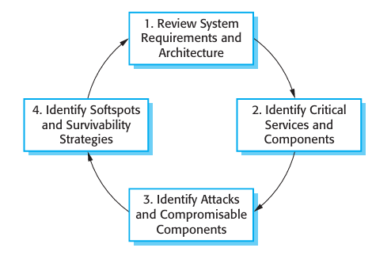
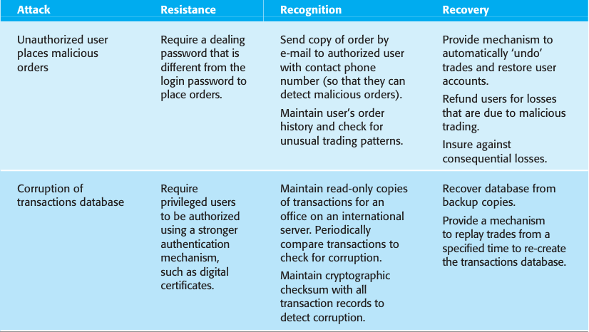

So far, I have discussed security engineering from the perspective of an application that is under development. The system procurer and developer have control over all aspects of the system that might be attacked. In reality, as I suggested in Figure 14.1, modern dis tributed systems inevitably rely on an infrastructure that includes off-the-shelf systems and reusable components that have been developed by different organizations. The secu rity of these systems does not just depend on local design decisions. It is also affected by the security of external applications, web services, and the network infrastructure.
This means that, irrespective of how much attention is paid to security, it cannot be guaranteed that a system will be able to resist external attacks. Consequently, for com plex networked systems, you should assume that penetration is possible and that the integrity of the system cannot be guaranteed. You should therefore think about how to make the system resilient so that it survives to deliver essential services to users.
Survivability or resilience (Westmark, 2004) is an emergent property of a system as a whole, rather than a property of individual components, which may not them selves be survivable. The survivability of a system reflects its ability to continue to deliver essential business or mission-critical services to legitimate users while it is under attack or after part of the system has been damaged. The damage could be caused by an attack or by a system failure.
Work on system survivability was prompted by the fact that our economic and social lives are dependent on a computer-controlled critical infrastructure. This includes the infrastructure for delivering utilities (power, water, gas, etc.) and, equally critically, the infrastructure for delivering and managing information (telephones, Internet, postal service, etc.). However, survivability is not simply a critical infrastructure issue. Any organization that relies on critical networked computer systems should be concerned with how its business would be affected if their systems did not survive a malicious attack or catastrophic system failure. Therefore, for business critical systems, surviv ability analysis and design should be part of the security engineering process.
Maintaining the availability of critical services is the essence of survivability. This means that you have to know:
-
the system services that are the most critical for a business;
-
the minimal quality of service that must be maintained;
-
how these services might be compromised;
-
how these services can be protected;
-
how you can recover quickly if the services become unavailable.
For example, in a system that handles ambulance dispatch in response to emergency calls, the critical services are those concerned with taking calls and dispatching ambu lances to the medical emergency. Other services, such as call logging and ambulance location management, are less critical, either because they do not require real-time pro cessing or because alternative mechanisms may be used. For example, to find an ambu lance’s location you can call the ambulance crew and ask them where they are.
Ellison and colleagues (1999a; 1999b; 2002) have designed a method of analysis called Survivable Systems Analysis. This is used to assess vulnerabilities in systems and to support the design of system architectures and features that promote system survivability. They argue that achieving survivability depends on three complemen tary strategies:
-
Resistance Avoiding problems by building capabilities into the system to repel attacks. For example, a system may use digital certificates to authenticate users, thus making it more difficult for unauthorized users to gain access.
-
Recognition Detecting problems by building capabilities into the system to detect attacks and failures and assess the resultant damage. For example, checksums may be associated with critical data so that corruptions to that data can be detected.
-
Recovery Tolerating problems by building capabilities into the system to deliver essential services while under attack, and to recover full functionality after an attack. For example, fault tolerance mechanisms using diverse implementations of the same functionality may be included to cope with a loss of service from one part of the system.

Figure 14.8 Stages in survivability analysis
Survivable systems analysis is a four-stage process (Figure 14.8) that analyzes the current or proposed system requirements and architecture; identifies critical serv ices, attack scenarios, and system ‘softspots’; and proposes changes to improve the survivability of a system. The key activities in each of these stages are as follows:
-
System understanding For an existing or proposed system, review the goals of the system (sometimes called the mission objectives), the system requirements, and the system architecture.
-
Critical service identification The services that must always be maintained and the components that are required to maintain these services are identified.
-
Attack simulation Scenarios or use cases for possible attacks are identified along with the system components that would be affected by these attacks.
-
Survivability analysis Components that are both essential and compromisable by an attack are identified and survivability strategies based on resistance, recognition, and recovery are identified.
Ellison and his colleagues present an excellent case study of the method based on a system to support mental health treatment (1999b). This system is similar to the MHC-PMS that I have used as an example in this book. Rather than repeat their analysis, I use the equity trading system, as shown in Figure 14.5, to illustrate some of the features of survivability analysis.
As you can see from Figure 14.5, this system already has already made some provi sion for survivability. User accounts and equity prices are replicated across servers so that orders can be placed even if the local server is unavailable. Let’s assume that the capabil ity for authorized users to place orders for stock is the key service that must be main tained. To ensure that users trust the system, it is essential that integrity be maintained. Orders must be accurate and reflect the actual sales or purchases made by a system user.
Figure 14.9 Survivability analysis in an equity trading system
To maintain this ordering service, there are three components of the system that are used:
-
User authentication This allows authorized users to log on to the system.
-
Price quotation This allows the buying and selling price of a stock to be quoted.
-
Order placement This allows buy and sell orders at a given price to be made.
These components obviously make use of essential data assets such as a user account database, a price database, and an order transaction database. These must survive attacks if service is to be maintained.
There are several different types of attack on this system that might be made. Let’s consider two possibilities here:
-
A malicious user has a grudge against an accredited system user. He gains access to the system using their credentials. Malicious orders are placed and stock is bought and sold, with the intention of causing problems for the authorized user.
-
An unauthorized user corrupts the database of transactions by gaining permis sion to issue SQL commands directly. Reconciliation of sales and purchases is therefore impossible.
Figure 14.9 shows examples of resistance, recognition, and recovery strategies that might be used to help counter these attacks.
Increasing the survivability or resilience of a system of course costs money. Companies may be reluctant to invest in survivability if they have never suffered a serious attack or associated loss. However, just as it is best to buy good locks and an alarm before rather than after your house is burgled, it is best to invest in survivabil ity before, rather than after, a successful attack. Survivability analysis is not yet part of most software engineering processes but, as more and more systems become busi ness critical, such analyzes are likely to become more widely used.
KEY POINTS
-
Security engineering focuses on how to develop and maintain software systems that can resist
malicious attacks intended to damage a computer-based system or its data.
-
Security threats can be threats to the confidentiality, integrity, or availability of a
system or its data.
Security engineering focuses on how to develop and maintain software systems that can resist malicious attacks intended to damage a computer-based system or its data.
Security threats can be threats to the confidentiality, integrity, or availability of a system or its data.
FURTHER READING
‘Survivable Network System Analysis: A Case Study.’ An excellent paper that introduces the notion of system survivability and uses a case study of a mental health record treatment system to illustrate the application of a survivability method. (R. J. Ellison, R. C. Linger, T. Longstaff and N. R. Mead, IEEE Software, 16 (4), July/August 1999.)
Building Secure Software: How to Avoid Security Problems the Right Way. A good practical book covering security from a programming perspective. (J. Viega and G. McGraw, Addison-Wesley, 2002.)
Security Engineering: A Guide to Building Dependable Distributed Systems, 2nd edition. This is a thorough and comprehensive discussion of the problems of building secure systems. The focus is on systems rather than software engineering with extensive coverage of hardware and networking, with excellent examples drawn from real system failures. (R. Anderson, John Wiley & Sons, 2008.)
EXERCISES
-
1. Explain the important differences between application security engineering and infrastructure security engineering.
-
For the MHC-PMS, suggest an example of an asset, exposure, vulnerability, attack, threat, and control.
Alberts, C. and Dorofee, A. (2002). Managing Information Security Risks: The OCTAVE Approach. Boston: Addison-Wesley.
Alexander, I. (2003). ‘Misuse Cases: Use Cases with Hostile Intent’. IEEE Software, 20 (1), 58–66.